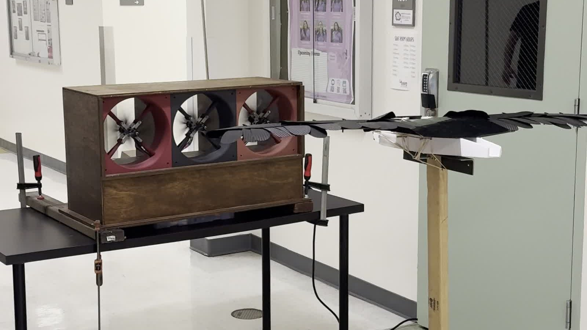
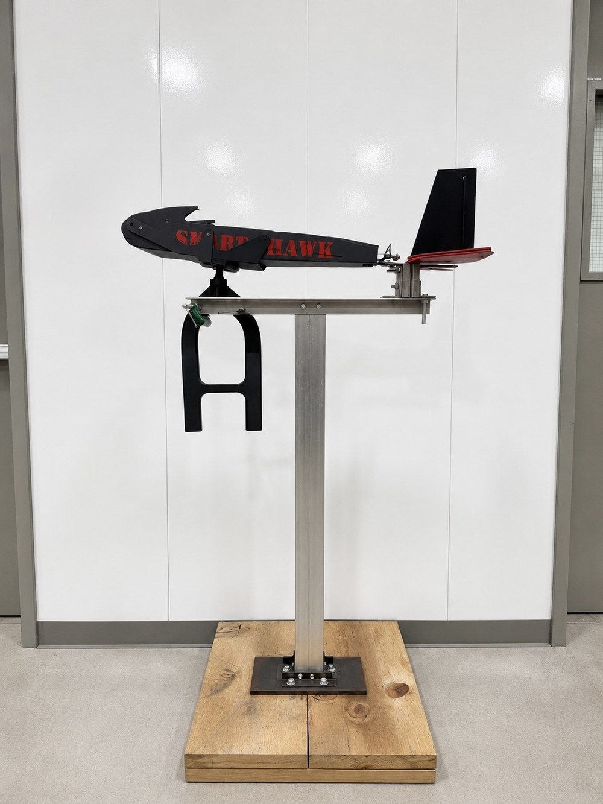
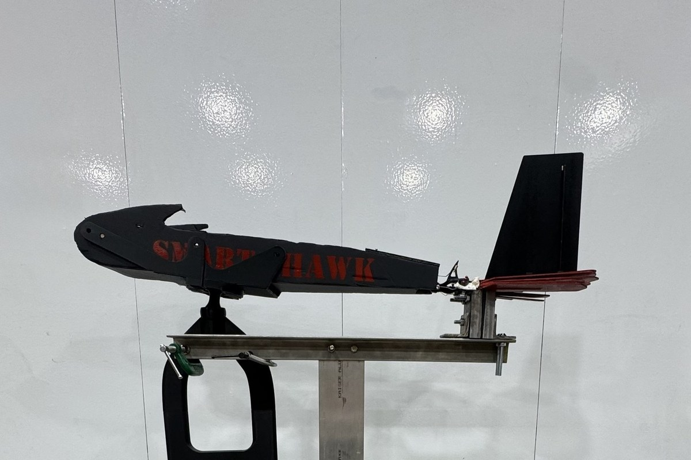

The SMART Hawk · Structural test system
The Bird Stand
Built to support The SMART Hawk at its center of gravity, the Bird Stand holds the aircraft in place while a ball and socket joint allows pitch and roll. Paired with controlled laboratory airflow, it provides a repeatable platform for testing flight controls.

Test limitation
Bringing Flight Control Testing Into the Laboratory
Early control tests mounted The SMART Hawk on a ball and socket fixture above a moving truck bed. Gusts, upwash from the vehicle, and uneven airflow made test conditions inconsistent, and the aircraft did not achieve sustained stabilization.
Brought the test approach indoors with a rigid stand that holds the aircraft in place, allows pitch and roll, and works with controlled airflow from the Wind Generator.

Mechanical design
Holding the Aircraft Steady While Allowing Pitch and Roll
Built a stiff support structure to keep stand deflection from interfering with measurements of the aircraft's aerodynamic and control response.

- Controlled aircraft motion: holds the aircraft in front of the Wind Generator with negligible stand deflection under load.
- Center of gravity measurement: uses the frame to check and adjust aircraft balance, improving the tail's available pitch authority before flight.
- Add 4 load cells rated at 5 kg each to measure lift and drag directly through the existing stand.
- Calibrate closed loop stability once the Wind Generator's airflow feedback system is operating.
The modular frame provides room for additional instruments on the existing support structure.
Developed the test approach and led the design and fabrication of both versions of the stand.
V1 used a mainly wooden frame to prove the test approach during airflow and flutter trials. Supporting the aircraft at its center of gravity isolated pitch and roll while holding its position.
V2 added a steel reinforced base and aluminum and steel supports to bring deflection down to negligible levels under test load.